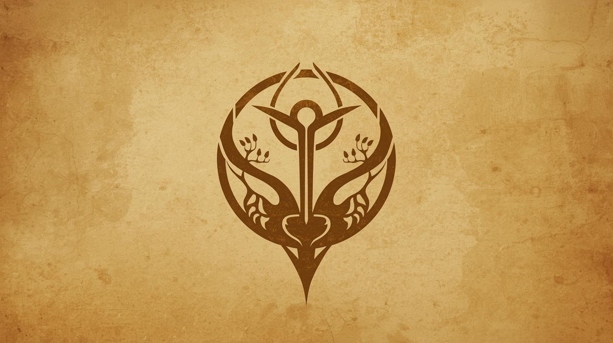

Beneath the Blistering Crust
Scaled Hunters of the Basin
"Hot sand swallows their tracks before loose powder can settle."
Hot sand swallows their tracks before loose powder can settle; caravan guards dismiss the Tulari as heat-induced hallucinations. Yet beneath blistering crust, a civilization thrives in the cool, excavated dark.
Shifting surface winds erase the mouths of their subterranean warrens. The stalkers ascend into the punishing glare, wearing the desert. Sunfire glints off overlapping, gold-hued scales cladding their shoulders and forearms, natural plating that turns away scouring sandstorms and steel blades alike. And heavy copper braids whip in the sirocco, bound tightly against the skull. A jade or amber gaze cuts through the thick dust haze, unblinking.
A drawn recurve bow materializes from the empty, sun-baked air. The scaled hunters step across steep dunes, their daggers curved like striking vipers. Speed dictates their mastery of the basin.
Their kind holds a reverence for the violent earth. The Tulari leave fresh-blooded offerings at the lips of massive, winding trenches that score the desert. And when bedrock shudders, a subterranean rumble, the scaled warriors do not scatter. They bow.
For the Tulari, Nightfall brings the thrum of stretched leather drums echoing through bedrock. Their hypnotic rhythm pulsing straight through the soles of marauders. Deep within the earth, the desert-dwellers stomp the history of the sands through ferocious dance. A lost outsider dragged into the burrows faces immediate judgment. They might meet the serrated edge of a bronze sword. Alternatively, they might receive a gourd of spiced water and a place at the fire. The dunes bury their secrets well.